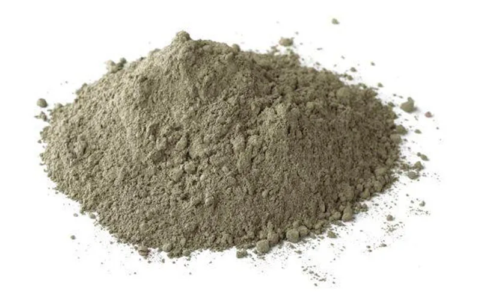

Cimenteiras: Impactos Ambientais e Controle de Poeira
Da extração do calcário ao forno de clinquerização, entenda os desafios ambientais da indústria cimenteira.

O cimento é um material de extrema importância para a vida humana, presente em todos os tipos de construção, desde pequenas moradias até grandes obras. As elevadas produções das indústrias cimenteiras geram, naturalmente, impactos ambientais que precisam ser gerenciados ao longo de toda a cadeia produtiva, da extração da matéria-prima até a expedição do produto final.
As principais etapas geradoras de poluição
Dentre os processos de fabricação do cimento, três etapas principais geram poluição:
- O processo de mineração, com a extração de calcário
- O transporte e manuseio de material particulado
- O forno de clinquerização, onde é fabricado o clínquer
Os níveis de poeira e ruído gerados na mineração e na movimentação de máquinas podem atingir patamares elevados caso não sejam devidamente controlados. Mas, olhando com mais detalhe para o processo produtivo, a geração de particulado não se concentra em um único ponto, ela está distribuída ao longo de praticamente toda a operação.
Onde o particulado é gerado no processo produtivo
A extração de calcário na frente de lavra já produz poeira na perfuração, no desmonte e no carregamento do material. Na sequência, a britagem primária e secundária reduz o tamanho das rochas e libera quantidades significativas de finos no ar. A etapa de moagem, tanto da matéria-prima quanto do clínquer, é outro ponto crítico, pois trabalha o material até granulometrias muito finas, que se tornam facilmente respiráveis e fáceis de arrastar pelo vento.
Some-se a isso o transporte interno por correias transportadoras, os silos de armazenamento de matéria-prima e produto acabado, o carregamento de caminhões e vagões na expedição, e os pátios de estocagem de clínquer, calcário, gesso e demais adições. Cada um desses pontos representa uma fonte potencial de emissão, e juntos formam um mapa de risco que precisa ser tratado de forma sistêmica, não pontual.
Emissões pontuais x emissões fugitivas
É importante distinguir dois tipos de emissão em uma cimenteira. As emissões pontuais saem por chaminés e dutos de exaustão de equipamentos enclausurados, como fornos e moinhos, e já costumam ser tratadas por filtros de manga, tecnologia consolidada e amplamente regulamentada para esse tipo de fonte.
Já as emissões fugitivas são difusas: ocorrem em áreas abertas, sem captação direta possível, como pátios de estocagem, vias internas de tráfego de caminhões e pontos de transferência de material entre correias, silos e equipamentos. É justamente nesse cenário que os canhões de névoa atuam, cobrindo uma lacuna que os sistemas de exaustão e filtragem não alcançam. Esse mesmo princípio é detalhado no artigo sobre sustentabilidade industrial e a importância do abatimento de particulado.
Contexto regulatório e licenciamento ambiental
Cimenteiras, como toda atividade industrial de grande porte, estão sujeitas a licenciamento ambiental e a monitoramento contínuo de suas emissões atmosféricas. Os padrões de qualidade do ar no Brasil são orientados pela Resolução CONAMA 03/90, que estabelece limites para poluentes atmosféricos, incluindo material particulado. Cumprir esses parâmetros não é apenas uma exigência legal, é também parte da licença social para operar, especialmente em regiões com vizinhança próxima às instalações industriais.
O mesmo raciocínio regulatório se aplica a outros setores intensivos em movimentação de granéis, como discutido em impactos ambientais da mineração, onde a lógica de licenciamento e controle de particulado segue princípios semelhantes.
Impactos da poeira na vizinhança e na saúde ocupacional
A poeira de cimento que escapa do processo produtivo não fica restrita aos limites da planta. Ela se deposita sobre a vegetação ao redor, prejudicando a fotossíntese das plantas; contamina corpos d'água próximos; e se acumula sobre telhados, varandas e veículos em residências vizinhas, gerando reclamações recorrentes e desgaste na relação da empresa com a comunidade.
No ambiente interno da planta, a exposição constante ao particulado também é uma questão de saúde ocupacional. Trabalhadores expostos a altas concentrações de poeira ao longo da jornada estão sujeitos a problemas respiratórios, o que reforça a importância de medidas de controle nas áreas de maior circulação de pessoas e equipamentos, como pátios e pontos de carregamento.
Por que o controle nos pátios e pontos de transferência é estratégico
Pátios de estocagem concentram grandes volumes de material exposto ao tempo e à movimentação constante de pás carregadeiras, caminhões e empilhadeiras. Isso faz desses pontos, junto aos locais de transferência de material entre equipamentos, áreas de altíssimo potencial de geração de poeira fugitiva, justamente onde soluções pontuais como enclausuramento completo costumam ser inviáveis pelo volume e pela dinâmica operacional.
Como abordado em aplicação dos canhões de névoa em pilhas de materiais, esse tipo de equipamento foi desenvolvido exatamente para cobrir grandes áreas abertas com névoa de gotículas finas, que se aglutinam ao particulado em suspensão e o precipitam, sem encharcar o material nem comprometer sua qualidade.
Uma estratégia integrada de controle de poeira
O controle de poeira mais eficaz em uma cimenteira não depende de uma única tecnologia, mas da integração entre diferentes sistemas. Filtros de manga seguem responsáveis pelas emissões pontuais em equipamentos enclausurados; sistemas de umidificação tratam as vias internas de tráfego; e os canhões de névoa cobrem pátios de estocagem, áreas de carregamento e pontos de transferência a céu aberto. Juntas, essas frentes formam uma estratégia de gestão ambiental capaz de atender tanto às exigências regulatórias quanto à convivência saudável com a vizinhança.
Vale lembrar que o impacto da poeira não se limita ao meio ambiente e à saúde: ele também tem custo operacional, com perda de material, desgaste de equipamentos e retrabalho, um tema explorado em detalhe no artigo qual o custo da poeira para a sua empresa.
O controle de poeira na mineração de calcário
Em relação ao excesso de poeira gerado na mineração, que causa impacto ambiental e também doenças respiratórias, o mais adequado é a aplicação por aspersão de água para o abatimento desse particulado em suspensão. A Suppress oferece uma excelente solução com a tecnologia dos Canhões de Névoa.
O canhão de névoa lança uma névoa com partículas bem finas de água em relação às partículas de poeira, tornando-a mais pesada e evitando que se espalhe com a ação do vento, uma solução eficiente para reduzir o impacto ambiental nas etapas de extração e movimentação de calcário nas operações cimenteiras. Para pátios de grande porte e alta movimentação de material, modelos de maior alcance como o canhão de névoa SP-150 costumam ser os mais indicados.
Perguntas Frequentes
Quais são as principais fontes de poeira em uma cimenteira?
As principais fontes são a extração e britagem de calcário, a moagem de matérias-primas, o transporte interno entre etapas do processo, os silos de armazenamento, o carregamento de caminhões e vagões e os pátios de estocagem de clínquer e adições. Cada ponto de transferência de material é um potencial gerador de particulado em suspensão.
Como os canhões de névoa se diferenciam dos filtros de manga?
Filtros de manga atuam sobre emissões pontuais, capturando particulado diretamente em chaminés e dutos de exaustão de equipamentos enclausurados. Os canhões de névoa atuam sobre emissões fugitivas difusas, em áreas abertas como pátios de estocagem, vias internas e pontos de transferência, onde não há como captar o ar por um duto. As duas tecnologias são complementares dentro de uma estratégia integrada de controle de poeira.
Qual o papel do licenciamento ambiental no controle de poeira de cimenteiras?
Cimenteiras estão sujeitas a licenciamento ambiental e ao monitoramento de emissões atmosféricas, com padrões de qualidade do ar definidos por normas como a Resolução CONAMA 03/90. O licenciamento exige que a empresa demonstre controle sobre fontes pontuais e fugitivas, o que torna o investimento em sistemas de supressão de poeira parte da conformidade regulatória da operação.
Quer reduzir os impactos ambientais da sua cimenteira?
Fale com nossos engenheiros e descubra a solução ideal para o controle de poeira na sua operação.
Solicitar Proposta